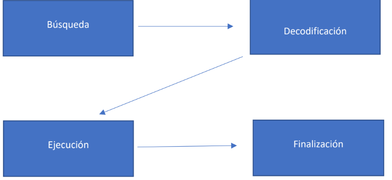
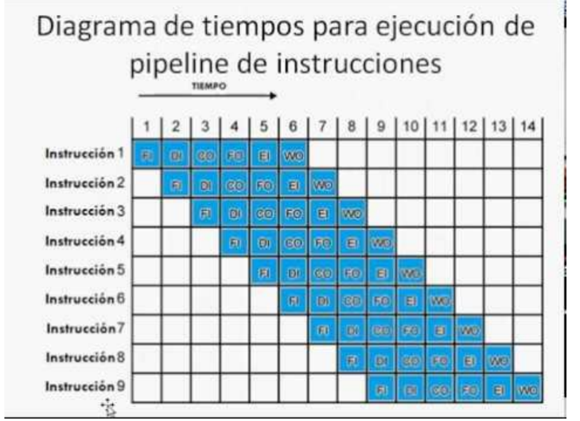

Un ciclo de instrucción (también llamado ciclo de fetch-and-execute o ciclo de
fetchdecode-execute en inglés) es el período que tarda la unidad central de proceso
(CPU) en ejecutar una instrucción de lenguaje máquina.

-Búsqueda:
Extrae las direcciones de memoria del contador del programa.
-Ejecución:
Simplemente ejecuta la acción ya que en esta parte el procesador ya sabe de que
instrucción se trata
-Decodificación:
Decodifica el mensaje en un lenguaje que la computadora pueda entender
-Finalización:
Se almacena el resultado en la memoria o en un dispositivo de salida.
Segmentacion de instrucciones.
Es una técnica que permite implementar el paralelismo a nivel de instrucción en un único
procesador, esta arquitectura es usada en arquitecturas vectoriales.

Li: lectura de instrucción.
Di: decodificador de instrucción.
Ej: ejecución.
Mem: acceso a memoria.
Es: escritura de vuelta al registro.